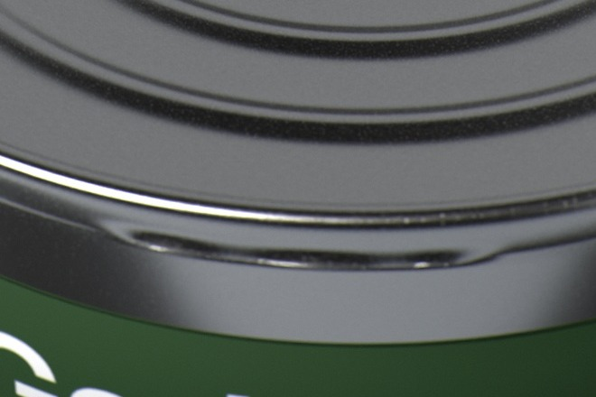
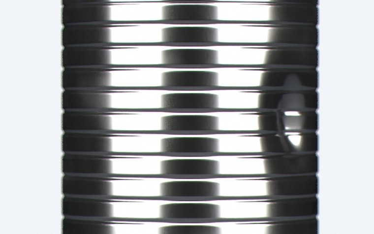
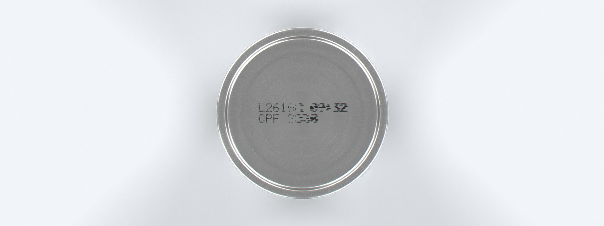

La necesidad
Inspeccionar el 100 % de las latas de la línea 2 antes del autoclave y retirar de la línea las defectuosas sin bajar la cadencia.
Línea
| Producto | Garbanzos cocidos, lata de 400 g |
|---|---|
| Envase | Lata cilíndrica de hojalata, 73 y 99 mm de diámetro |
| Cadencia | Hasta 18 000 latas/hora |
| Punto de inspección | Transportador a la salida de la cerradora |
| Separación entre latas | 80 mm o más |
| Rechazo | A una mesa de acumulación junto al transportador |
Defectos que hay que detectar

Falso cierre

Pico en el cierre

Abolladuras

Lote y caducidad ilegibles